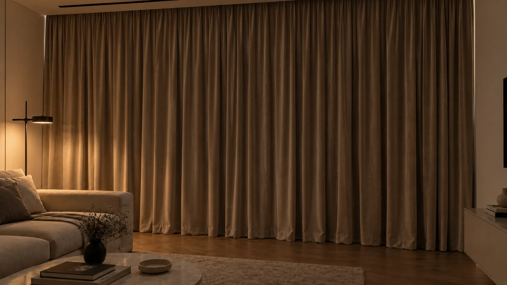

Штори блекаут на замовлення в Києві
Блекаут — це не назва конструкції, а властивість матеріалу: полотно, крізь яке світло не проходить. Тому штору блекаут можна зробити майже будь-якою — класичною портьєрою, римською, рулонною. Питання завжди в тому, скільки темряви вам справді потрібно і яким шляхом її отримати: суцільним світлонепроникним полотном чи підкладкою до тканини, яка вам подобається.

Що дає блекаут насправді
Світлонепроникність — властивість самого полотна, а не вікна. Тканина блекаут не пропускає світло крізь себе, але кімнату затемнює не вона одна, а вся геометрія: те, наскільки штора заходить за отвір, чи є щілина зверху над карнизом, чи стуляються полотна по центру, який зазор лишається до підлоги.
Через це формулювання «повна темрява» майже завжди перебільшення. Полотно блокує світло, периметр — ні: воно проходить по краях. Реалістичне очікування — глибокий сутінок, у якому можна спати вранці й дивитися проєктор удень. Абсолютна темрява вимагає не тканини, а конструкції: штори в проріз із боковими напрямними або ніші, яка перекриває верх.
Друга властивість, про яку згадують рідше, — теплова. Щільне полотно з підкладкою відсікає нагрів від південного сонця влітку й трохи стримує холод від скла взимку. Це не заміна енергоефективному вікну, але різницю біля підвіконня відчутно.
І третя — акустична. Важка тканина не звукоізолює кімнату, проте гасить відлуння всередині неї: у порожній кімнаті з великим склінням це чути одразу після монтажу.
Суцільне полотно чи підкладка — два різні рішення
Перший шлях — шити штору з тканини, яка сама по собі світлонепроникна. Це найпростіше рішення й найтонший результат за товщиною, але вибір фактур і кольорів у такому полотні завжди вужчий за звичайний портьєрний асортимент.
Другий шлях — узяти тканину, яка вам подобається, і зшити її з блекаут-підкладкою. Тоді лицьовий бік лишається таким, як ви обрали, а темряву забезпечує другий шар. Додатковий бонус: підкладка захищає лицьову тканину від вигоряння й додає їй ваги, тому складка лягає глибше й тримається краще.
Є й третій варіант — знімна підкладка на окремій стрічці. Її можна відстебнути на літо або прати окремо від лицьового полотна. Рішення менш поширене, але доречне там, де штору знімають і перуть часто.
Що обрати, залежить від того, що для вас первинне: якщо конкретна тканина — беремо підкладку, якщо максимальний ефект при мінімальній товщині — суцільне полотно.
Кому підходить, а кому — ні
Очевидні сценарії — спальня з вікнами на схід, дитяча з денним сном, кімната з проєктором, квартира навпроти вуличного ліхтаря чи вивіски. Окремий випадок — робота позмінно: тут блекаут перестає бути питанням комфорту й стає питанням сну.
- єдина кімната, яка водночас є робочою: щоденне зашторювання швидко зношує механізм і набридає;
- вікна на північ, де прямого сонця й так немає — темряву дасть уже звичайна щільна портьєра;
- маленька кімната з одним невеликим вікном: блекаут у ній читається як важка пляма;
- кухня, де полотно набирає жир і потребує частого прання, — тут доречніша рулонна система;
- оранжерея, зимовий сад і кімнати з рослинами під вікном.
Але є ситуації, де щільне затемнення шкодить більше, ніж допомагає:
Від чого залежить вартість
На ціну впливає спосіб затемнення, а не саме слово «блекаут». Основні фактори:
- ширина карниза й висота від точки кріплення до низу полотна;
- спосіб: суцільна світлонепроникна тканина, пришивна блекаут-підкладка чи знімна на стрічці;
- коефіцієнт складки — прямий множник витрати обох шарів одразу;
- конструкція: портьєра на карнизі, римська штора, рулонна система в проріз;
- обробка верху й низу, обтяжувач, бокові кромки;
- наявність бокових напрямних або короба, якщо потрібне максимальне затемнення;
- карниз і кріплення: тип, довжина, матеріал стіни або стелі, ніша під профіль.
Точну суму рахують після заміру, коли обрані конструкція, тканина й спосіб затемнення.
Які тканини пасують і чому
У каталозі блекаут представлений як окрема позиція комплектації — блекаут-підкладка. Її підшивають до будь-якої портьєрної тканини, і саме цей варіант ми пропонуємо найчастіше: він не обмежує вибір лицьового полотна.
Найкраще з підкладкою працюють щільні тканини з вагою: Оксамит, Velvet Luxe і Мікровелюр дають глибокий, майже беззвучний матовий тон і рівну складку. Портьєрна тканина та Канвас легші, і з підкладкою вони тримають форму краще, ніж без неї. Lion, ICON, Happy, Jolly та Urban Gold дизайнер привозить на замір разом зі зразком підкладки, щоб ви побачили пару в зборі, а не окремо.
Light Air у цьому комплекті грає протилежну роль: це денний напівпрозорий шар, який лишає кімнату світлою, поки щільна штора відкрита. Пара «легкий тюль плюс блекаут» закриває обидва сценарії — світлий день і темна ніч — і саме тому вона найпоширеніша у спальнях.
Карниз, кріплення й геометрія затемнення
Темрява народжується на периметрі, тому карниз тут важливіший, ніж у будь-якому іншому типі штор. Полотно має заходити за отвір з обох боків із запасом, а не закінчуватися рівно по краю вікна.
Найбільше світла проходить зверху — над карнизом, у зазорі між ним і стіною. Стельовий профіль або ніша знімають це питання одразу; штанга на кронштейнах — ні, і з нею верхню смугу світла доводиться приймати як даність. Другий канал — стик двох полотен по центру: їх кроять із перекриттям, інакше в темній кімнаті проступає світла вертикальна лінія.
Якщо потрібне справді глибоке затемнення, конструкцію змінюють: рулонну систему ставлять у проріз із боковими напрямними, які перекривають бічні щілини, а верх ховають у короб. Це вже не питання тканини, а питання того, як штора з'єднується з вікном.
Заміри, помилки й догляд
Помилки в замірі на блекауті помітні найгостріше: те, що на тюлі непомітно, тут світиться смугою в темній кімнаті.
- ширину беруть по вікну, а не по карнизу, і по краях лишається світлова смуга;
- не закладають перекриття по центру — між полотнами світиться вертикальна щілина;
- не враховують зазор над карнизом: без ніші або стельового профілю верх завжди підсвічує;
- знімають одну висоту, хоча підлога зі стелею рідко паралельні — міряють у трьох точках;
- забувають про радіатор: щільне полотно над батареєю надувається від конвекції й швидше старіє;
- не перевіряють, чи вистачає стіни збоку, щоб відкрите полотно не лишалося на склі.
Догляд простіший, ніж здається. Блекаут-полотно й підкладка не люблять високих температур і сильного віджиму: у місцях заломів покриття може змінити щільність, і це видно на просвіт. Тому прати варто на делікатному режимі за етикеткою, віджим ставити мінімальний, а прасувати — лише з лицьового боку через проміжний шар і не по підкладці. Найпростіший спосіб уникнути заломів узагалі — вішати штору на карниз вологою: під власною вагою вона розправляється сама.
Виїзд дизайнера зі зразками в межах Києва безкоштовний і ні до чого не зобов'язує: на місці одразу видно, куди йде світло і що саме з цим вікном потрібно.
Що дизайнер привезе на замір
Нижче — позиції з нашого каталогу, які найчастіше беруть на цю конструкцію. Остаточний вибір роблять на вікні: тканина у вашому освітленні виглядає інакше, ніж на фотографії.